Building Snort#
Snort is an IDS/IPS solution provided by Cisco Talos.
For this build, I am building on
VMware (ESXi 7.0u3) - I’ll refer to this as ESX or similar
Ubuntu (Desktop 22.04.4) - I’ll refer to this as the Host machine or VM
Docker Desktop - Docker
Installing SnortV3
I will test with Wireshark and Metaspoit to confirm operation
If you want to build f
Use this for installing the dependencies: rom source: https://shape.host/resources/how-to-install-and-configure-snort-3-intrusion-detection-system-on-ubun
Use this for installing snort: https://docs.snort.org/start/installation
For Snort2: It’s actually in the apt respositories too, sudo apt install snort.tu-22-04
Full disclosure. Before going down this path I had never used containers before. I’m recording what works for me but it’s entirely possible (probable) there is a better or more efficient way of achieving this build. I’ll update as I know more but this is where I am now.
Building the Ubuntu Box#
For this lab, I’m building a Docker Box on Ubuntu. Technically you can run multiple solutions on Docker, but I’m still old when it comes to separation of services. Besides, we’ll be doing things to the network & Docker that are really bad practice.
I’m building a VM with 2xCPU, 4GB RAM and 32GB Storage. As always I have thin provisioned my VMs as I normally overprovision for the VM requirements. A key section here is that I’ve allocated the NIC to my INTERNAL network. This INTERNAL is internal to the virtual environment and isolated from my EXTERNAL home network via the pfSense router. Don’t want those two things mixing…
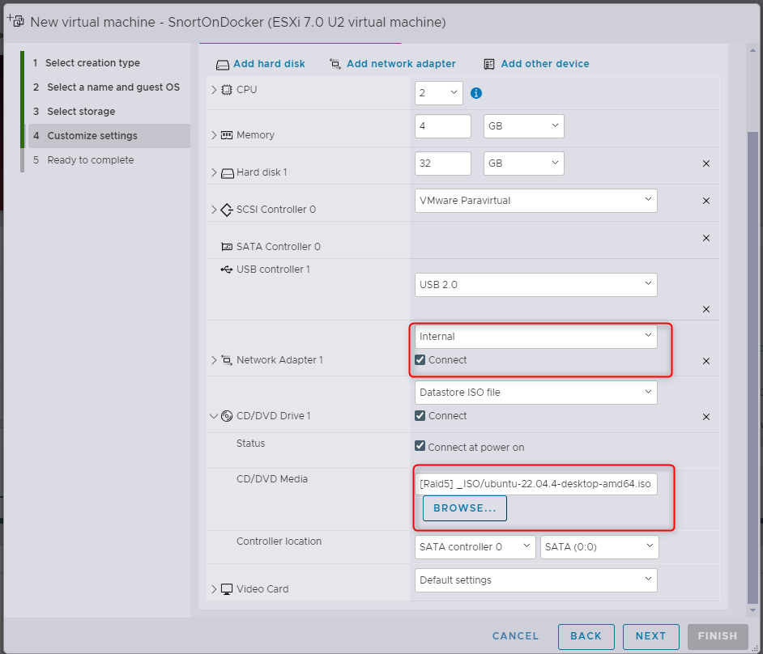
For the OS install, just follow the defaults (I’ll go through from a minimal installation). Remember to store your passwords in a password manager :-). While you’re waiting for the wheels to spin, we need to make a change to the virtual network.
Promiscuous Switch#
While I’m sure you know this, for packet sniffing to run, we need to receive the packets. Who would have thought. The problem with this is that virtual switches, well, switch traffic between specific ports. Data between 2 VMs on the same virtual switch is sent between just those two VMs; our sniffer gets left out of the conversation. To bypass this, we need to tell the vSwitch to send data to everyone on the vSwitch (functionally turning the switch into a hub). Most NICs will just drop the traffic they receive as it’s not for their MAC, however our sniffer will also be configured to pick this up. If this sounds excessive, you are correct, in a large vSwitch you will end up with data everywhere, bad practice.
Instead we can assign this mode to the Port Group; Internal as you saw earlier.
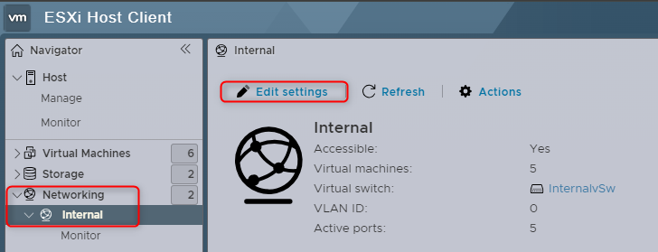
You can then set Promiscuous mode under security.
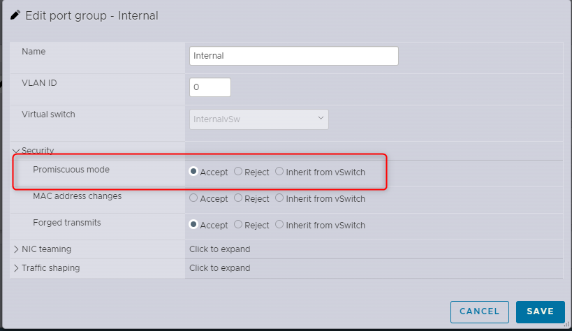
Now all we need to do is wait for the VM to finish building…..
Building Docker#
Once the VM has built and logged in, we need to run some standard Ubuntu things
If there are any updates, run them (you’ll be prompted)
Let Firefox install
We also need to ensure virtualisation is available to docker. Basically, allowing the VM to host VMs itself. This technology is known by different names depending on your host CPU (Intel V-T or AMD ….). Fortunately for us, it’s the same thing to VMware. Shut down your VM then edit it’s settings.
Check the ‘Hardware Virtualisation’ checkbox then save and start your VM back up.
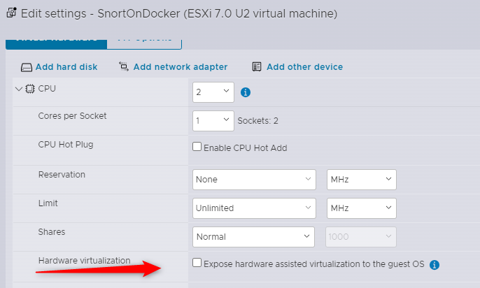
Install#
Docker has plenty of documentation available for installation. I’m following the ones
here: https://docs.docker.com/desktop/install/linux-install/
and here: https://docs.docker.com/desktop/install/linux-install/
On your Host machine, download the .deb package and open the download location. Right click in the window and select “Open in Terminal”. We’ll do pretty much everything from the terminal because that’s how things are done in linux.
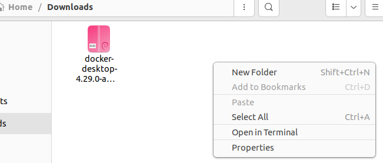
Add the package repository, the script can be found on the engine page: https://docs.docker.com/engine/install/ubuntu/#install-using-the-repository
Make sure you run step 1 only, the first blob of text. Just copy the blob and right click the terminal to paste it to the terminal. Hit enter to run and accept the install.
Next we run an update to make sure we pull the latest details from the repositories.
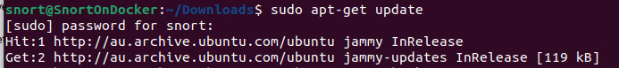
Then install the deb package we just downloaded. Tab complete will help you here instead of typing it in…
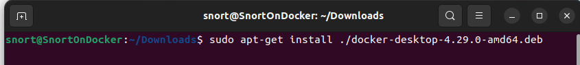
This is the error mentioned in the install notes:
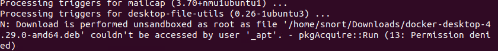
Launching Docker#
The documentation mentions two options for launching Docker. We’ll stick to the terminal. Start the service:
systemctl –user start docker-desktop
As I’m installing the IDS as a ‘permanent’ solution, we want it to enable it to auto run at startup
systemctl –user enable docker-desktop
Install Snort3 Container#
Now that we have docker installed, we can just pull the container down. These steps are https://hub.docker.com/r/ciscotalos/snort3
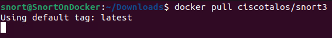
The container pull will download the files, extract them and put everything in the right spot. We just need to wait.
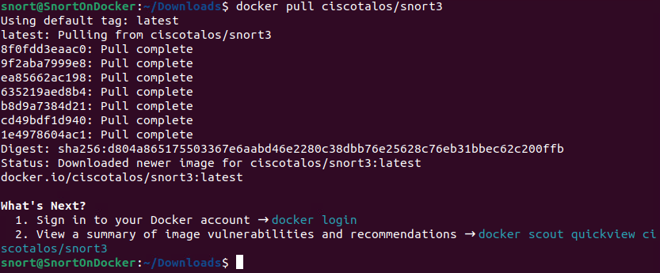
Using the Container#
To start the container, you need to run it:
docker run –name snort3 -h snort3 -u snorty -w /home/snorty -d -it ciscotalos/snort3 bash
To connect to the container, you need to start an interactive shell
docker exec -it snort3 bash
To exit the interactive shell, just exit
exit
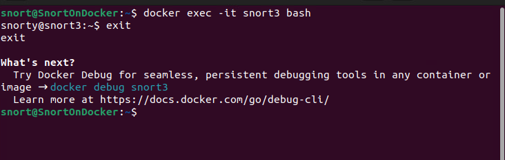
Testing Traffic Capture#
Before we get too far into the Snort setup, we need to make sure there is traffic hitting our machine to be investigated. As we are running a container, in an OS, in a VM, we want to make sure traffic is getting to our VM before we worry about internal configuration. We want something quite clear and visual, so my choice is Wireshark.
Install Wireshark#
It’s in the repository
sudo apt-get install wireshark
I allow non-root users to capture for wireshark. We’re far enough back in the network that I’m not too worried about this. We’ve also got the whole port group promiscuous, so if someone was going to sniff traffic they would do it elsewhere.
Background#
Before we get into this test, I think it makes sense to understand what we are testing and why. I’m using this diagram in Layer3, however it’s actually in Layer 2. We’ll be using IPs for the test so i think this makes it clearer. Just FYI for those who care.
Functionally, our local network looks like this. We have a few VMs that share a single virtual switch.
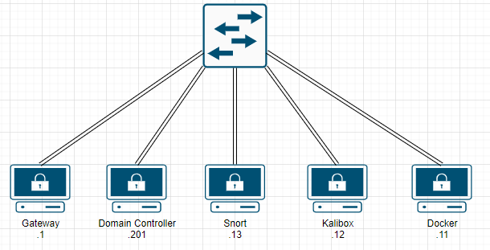
When traffic is sent between devices, a switch only sends the data to the intended target. For example, traffic from our Kali box to the Domain Controller will go from the Kali box, to the switch, then the switch to the Domain Controller. No other devices even get the data on the network. This is known as a Unicast on the network, as only one devices receives the data. This is great for traffic management and security, as only the intended device (and the switch) receives the data. This is the default setup for a vSwitch (and inherited by the port group).
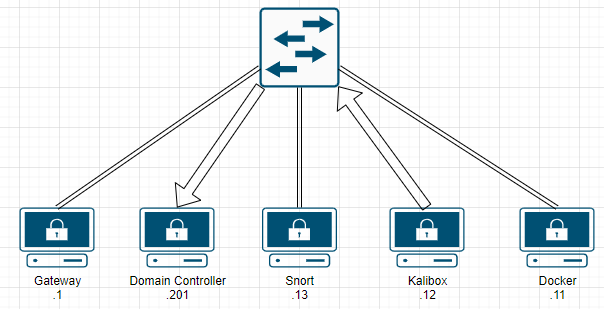
This is great, except for one glaring problem. How would our IDS monitor traffic it doesn’t receive? We can’t monitor data we don’t have. The “Promiscuous” mode we set earlier changes this operation on the internal port group. Instead of the data only going to the intended target in the switch, it is sent to all devices in the port group. The NIC then blocks or processes the packet, depending on it’s configuration.
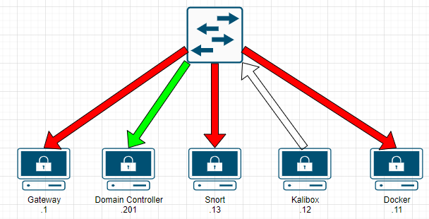
We’re getting closer, but in order for our applications to recieve the data, we also need our local NIC to be set permiscous. While the switch may send us the packet, our device won’t process it unless the NIC is also set to recieve all packets, even those not destined for it.
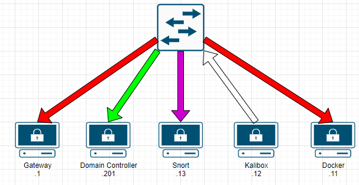
Make sense? OK let’s get started.
Testing Data#
To launch wireshark, just run wireshark in the terminal. You need sudo to pick up the NICs
sudo wireshark
My adapter is ens192, so double click it.
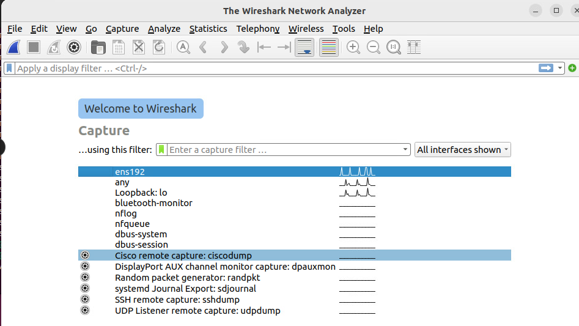
The capture starts automatically, lets stop this for now.
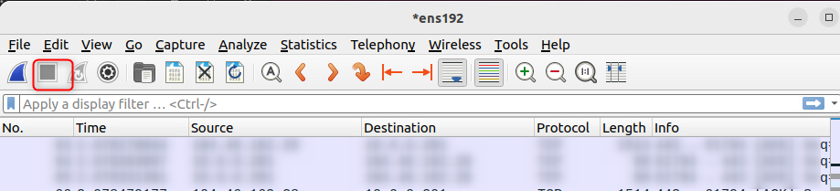
You should see some traffic captured already. If not, make sure you have the correct adaptor connected. Lets simulate some traffic for capture. Really it can be anything, but I like to be as close to realistic as possible, so lets simulate a port scan. For this I jump into my kali box and run a very loud -A scan. This scan is from .12 to .201. Start your capture again by clicking the blue shark fin next to the ‘stop’ above, ignore your changes from before then run the scan. You can stop the scan and then wireshark after a few seconds.
sudo nmap -sV 10.0.0.201 -A -v
Reviewing our captured data, we can see plenty of data hitting our Snort box, even though the neither the source or destination match our IP.
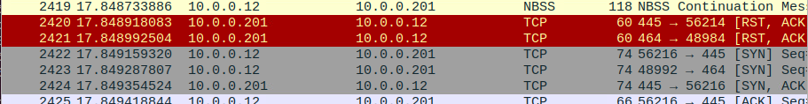
From this, we can logically assume that data is getting to our VM. Any future issues with receiving data on the Snort Container should focus on the container or OS, not the underlying network.
Traffic Capture - NIC#
How it should be#
Now that we know the VM can capture traffic, time to get the IDS to do the same. Lets start by working out which NIC we want to capture on. Enter the container (as above) then run:
ip link show | grep “state UP”
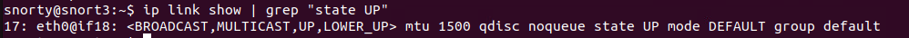
this will give us the NIC to capture traffic on. eth0 in this case. To capture traffic, it SHOULD be as easy as telling Snort to listen on the interface
snort -i eth0
As you’ve probably guessed by my outraged line above, this isn’t the case. If you run the above it will say you’re not permitted to run the command.
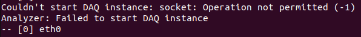
This is because you need to be root to listen on an interface in promiscuous mode. Snorty is not that… You also can’t swap to root unless you know the password. I haven’t been able to find this so option 2…
How it is#
Now, technically we should be assigning least privilege to snorty so they can start the listening, but I’m not that far… yet. Instead, let’s connect to the container as root. Exit the container and then reconnect as root
docker exec -it -u root snort3 bash
This will drop you in as the root user. Handy. Unfortunately you don’t have the paths linked as root so you will need to run snort from the folder.
cd /home/snorty/snort3/bin
you can then run snort as root
./snort
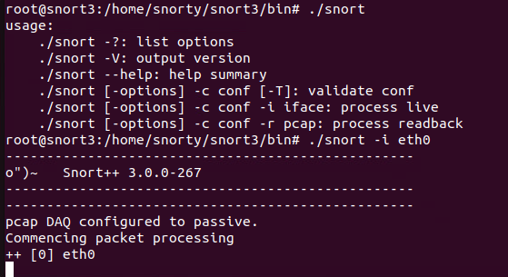
So, now what? Well we are listening but don’t know what for. Time to get your ThreatIntel on!
Return of the Traffic Capture#
So, let’s dive into our NIC on the container now. First, check the current state of the NIC
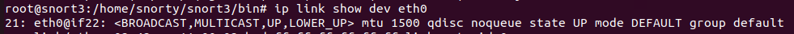
Well there’s your problem. The VM is set promiscuous, but the container isn’t…. We can set the NIC promiscuous using the below.
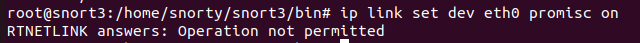
OK… I guess we can’t. A quick google search tells you the RTNETLINK not permitted is because of container security. You’re not supposed to be able to change the NIC settings from within a container. It makes sense to prevent containers being escaped, but right now it’s kind of annoying. The correct action is to change the docker-config file, but we only have the final image - not the original code. So, what can we do? Fortunately, we can override this when running the container. This is a good time to remember that ‘running’ a container is where we create a container from an image. We’re about to lose all our data from the old container: hope you’re smarter than me and haven’t done too much with it yet.
Exit the container
exit
Stop the container
docker stop snort3
Remove the container
docker remove snort3
Now, we can run the container with the new command. The capacity add has to be at the start of the command, it won’t work at the end.
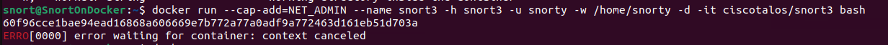
Once that’s done, we can retry our NIC change and check it has change correctly on the NIC
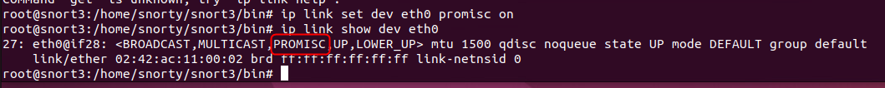
Woot. We have progress. Unfortunately, we still don’t get any data to our container… Back to the drawing board….
Traffic Capture the Third#
So, there is ANOTHER restriction on the container we have to get around for the listening…. Drop the container again and lets add another command….
docker stop snort3
docker remove snort3
This time, we will link the container to our host. I’m just running one container on this VM so I’m not TOO worried about this. Use at your own risk….
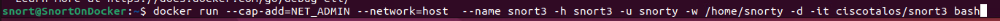
Then we can try our capture again. 3rd time’s the charm…
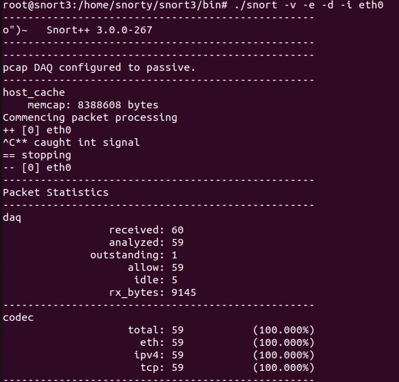
Woohoo!! I’m actually running a ping across the network for other devices on the switch, so some traffic is expected. Is it capturing for this chain or my actual host? Who knows? Let’s find out….
Rules#
One of the strengths of Snort is its wide adoption across the world. There are the ‘premium’ detection rules (which require a subscription), or the community generated rules; which are 30 days delayed. I think the community can write rules here too, don’t quote me on that.
The rules can be pulled from the Snort downloads page & copied to your container. I just pulled them using wget (after installing it) to my /tmp folder.
First install wget (it’s not included in the standard container)
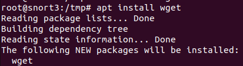
Try and get the current rule set from Snort downloads.
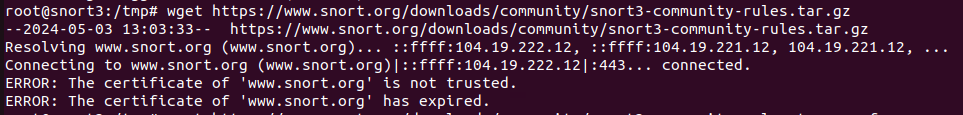
Ok, so it’s rejected the cert. It’s probably untrusted as I dont have the cert chain on the certificate. Let’s skip the cert check for now.
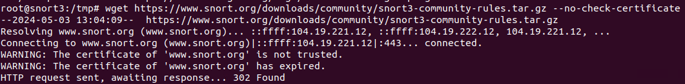
Extract the rules and take a look. Most of the archive is licences, readme etc. The one we care about is the rules files itself
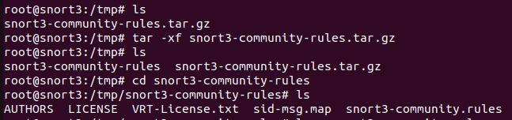
Try launch snort with the rule set (and standard config file)
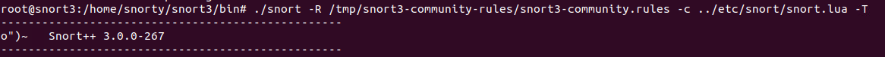
And we can see the rules have be brought in.
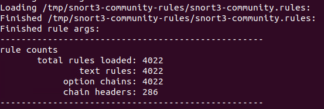
For those of you playing along at home, you can start a sniff with this ruleset by running the below.
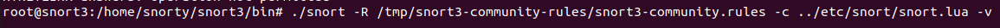
From here, I have dropped the rule set in the same directory as the snort binary, so you’ll see it here from now on. The default location (if you don’t set any rules) is in the home/snorty/snort3/etc/rules folder. I’m explicitly defining at this stage, but you may not want to bother
WIP, getting through the ‘container’ wall has been fun…
Snort On Ubuntu#
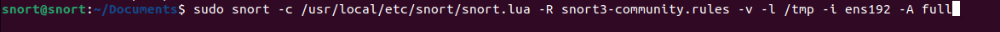